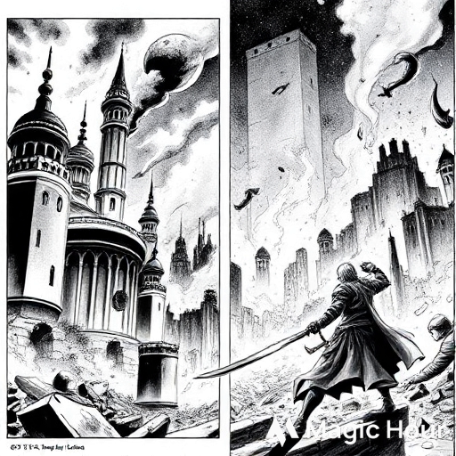
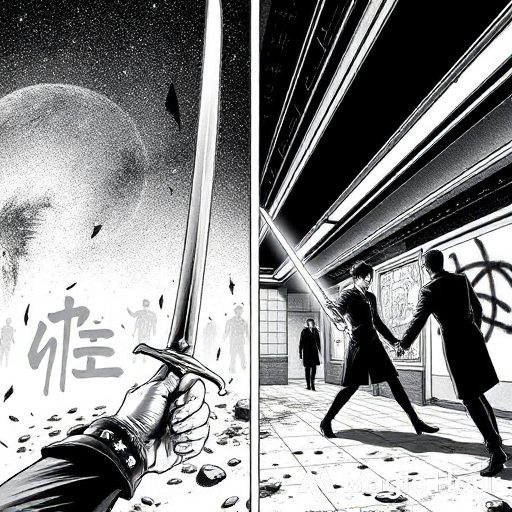
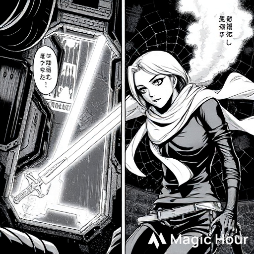
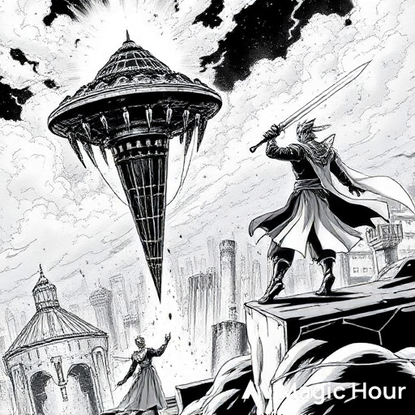
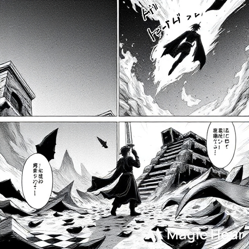
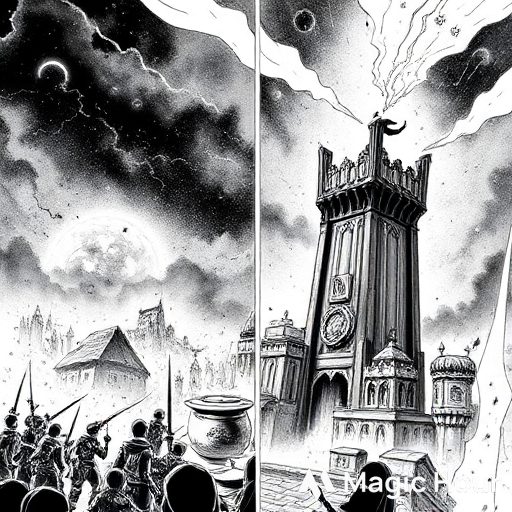
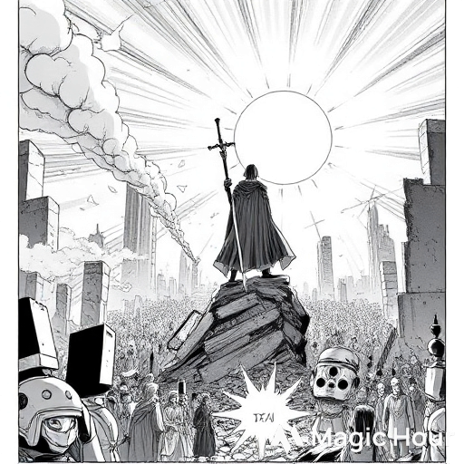

SWORDMAN PRINCE
Genre: Magic • Action • Ancient •
Chapter 1: The Broken Kingdom
The Kingdom of Velaria once stood as the bridge between tradition and progress — neon-lit towers rising beside ancient temples,
royal guards wielding plasma rifles beside knights sworn to the blade. But peace never lasts.
Prince Kael was only sixteen when the coup struck. His father, the High King, was betrayed by the Council of Steel —
nobles who wanted to replace the sword with machines.
In one night, the castle burned, and Kael was forced into exile, clutching nothing but his father’s ancient blade,
Eclipsera, forged from obsidian and light.
Hidden among the city’s ruins, Kael learned to survive. He worked in shadow-markets, disguised as a street fighter,
until the sword began whispering to him — not in words,
but in pulses of energy. It guided his hand, sharpened his instincts, and in dreams, it showed him the face of the traitor:
a general with silver eyes.
Kael vowed, “I’ll reclaim my throne — with steel and fire, not circuits.”

Chapter 2: The Blade’s Awakening
The sword was no ordinary relic. Eclipsera was a Soul Blade, powered by the life-force of royal heirs.
When Kael first bled on its edge during a fight, the weapon awoke — dark veins of light spiraling through the blade as if it breathed.
He collapsed, waking in a parallel vision — an endless plain of stars. There, his father’s voice echoed:
“The sword doesn’t choose the strongest, Kael. It chooses the one who never breaks.”
When Kael awoke, his arm glowed with the same sigil as Eclipsera. From that night,
he could summon fragments of the sword’s power — a spectral edge that cut through even metal.
But the Council of Steel learned of his survival. They sent Mechsoldiers, half-man, half-machine assassins, to hunt the lost prince.
Kael fought them off in an abandoned metro station, his sword’s light reflecting across broken glass and graffiti, his heart steady.
He wasn’t running anymore.

Chapter 3: The Girl from the Undergrid
Beneath the neon city, in the underground network known as the Undergrid, Kael met Lira — a hacker with
cybernetic eyes and a silver scarf that shimmered like starlight. She didn’t believe in kings or magic; she believed in survival.
“Royalty’s dead,” she said. “But your sword... that’s not tech I’ve ever seen.”
Kael smiled faintly. “That’s because it’s alive.”
Together, they struck a deal. She’d help Kael trace the Council’s hideouts through data shadows — in exchange, he’d protect her from bounty hunters.
Their bond grew in quiet moments: her laughter echoing through tunnels, his sword’s glow reflecting in her eyes. But neither admitted what they felt.
At night, Kael would see flashes of the future — flames, betrayal, and Lira’s face fading in smoke. The sword pulsed harder each time.

Chapter 4: The Silver General
Kael and Lira tracked the Council to a citadel floating above the city — a fortress powered by ancient energy cores.
Guarding it was General Ardent, the silver-eyed traitor from Kael’s visions.
Ardent was no longer human. His body fused with circuitry, his veins glowed blue. “You’re still just a child, Kael,” he sneered.
“The throne belongs to those who can evolve.”
The fight was brutal. Sparks and blood mixed as steel met steel — tradition against technology.
Kael’s blade screamed with every clash, cutting through armor and code alike.
But Ardent’s strength was overwhelming. In one strike, he shattered Eclipsera’s core and threw Kael from the platform.
Only Lira’s desperate hack of the citadel’s gravity grid saved him from falling to his death.
As the fortress vanished into the clouds, Kael swore he heard Ardent whisper through the comms:
“You can’t kill progress, my prince.”

Chapter 5: The Shadow Within
The broken sword became Kael’s greatest test. He and Lira hid deep in the wastelands, where the ruins of old kingdoms lay buried.
There, Kael sought out the Temple of the First Sword, a place said to restore fallen blades — but only at a price.
Inside, he faced illusions of his own fear: his father’s disappointed gaze, the cries of people he’d failed, and the face of Lira,
vanishing like mist. Each vision tore at his heart until he shouted, “I am not my failures!”
The sword responded, glowing from within. A voice echoed again — not his father’s this time, but his own.
“Power means nothing if you can’t protect what matters.”
Eclipsera reformed, its new edge blazing with twin colors: light and shadow. Kael stepped out of the temple no longer a boy — but a prince reborn.

Chapter 6: Fire Across the Skies
The rebellion began that night. Kael rallied the outcasts, the hackers, and the remnants of the old guard. With Lira at his side,
he marched on Velaria — a storm of plasma and fire lighting the night.
Every step forward was a war cry. Kael’s sword tore through drones and armored beasts,
its energy harmonizing with the pulse of the city’s power grid. Lira used her hacks to turn the city’s own defense systems against the Council.
In the final battle atop the royal tower, Kael faced Ardent once more.
“Machines can’t feel honor,” Kael said, his blade burning bright.
“And emotion is weakness,” Ardent replied.
Their final clash split the tower in two. Lightning roared — and when the dust settled, Ardent lay silent, circuits fading to black.

Chapter 7: The Prince’s Dawn
The sun rose over Velaria for the first time in years. Smoke drifted from shattered towers, and for a moment, the world was quiet.
Kael stood on the ruins of the throne room, sword in hand, as light filtered through broken glass. The people gathered below
— survivors, rebels, even machines freed from the Council’s control.
Lira approached, her silver eyes reflecting the dawn. “So... what now, Prince?”
Kael smiled softly. “No more kings. Just protectors.”
He plunged Eclipsera into the ground — and from it, energy rippled across the city, healing broken circuits, reigniting hope.
The age of machines had ended.
The era of the SwordMan Prince had begun.
